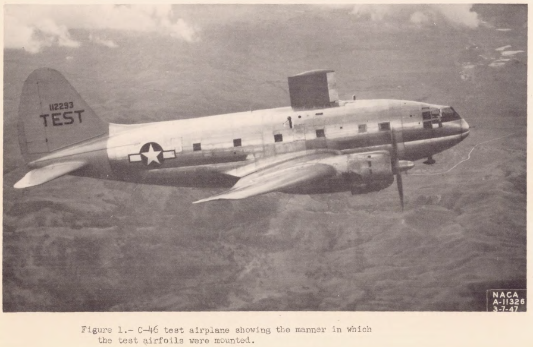

Icing Thermodynamics Thread
This thread will focus on the use of thermodynamic heat and mass balance for icing and ice protection calculations.
There may be some overlap with ice protection systems, but the systems will not be detailed herein.
NACA-ARR-5G13, Kinetic Temperature of Wet Surfaces A Method of Calculating the Amount of Alcohol Required to Prevent Ice, and the Derivation of the Psychrometric Equation."
Psychrometric equations are presented to calculate the thermal effects of evaporation from wet surfaces.
NACA-TR-831, An Analysis of the Dissipation of Heat in Conditions of Icing from a Section of the Wing of the C-46 Airplane
Two dimensional heat balance equations for ice protection are detailed.
NACA-TN-1472, The Calculation of the Heat Required for Wing Thermal Ice Prevention in Specified Icing Conditions
Natural icing flight tests with an instrumented test airfoil are compared to 2D thermodynamic calculations.
Ludlam, F. H.: The Heat Economy of a Rimed Cylinder
Various "Ludlam Limits" have been implemented, but they produce different results.
Messinger, B. L.: Equilibrium Temperature of an Unheated Icing Surface as a Function of Airspeed
The term "freezing fraction" is defined.
NACA-TN-2799, Simple Graphical Solution of Heat Transfer and Evaporation from Surface Heated to Prevent Icing
Simplified ice protection equations allow graphical solutions.
NACA-TN-2861, Analytical Investigation of Icing Limit for Diamond Shaped Airfoil in Transonic and Supersonic Flow, and
NACA-TN-2914, A Method for Rapid Determination of the Icing Limit of a Body in Terms of the Stream Conditions
The warmest ambient temperature at which ice can accumulate is calculated.
Fraser, D.: Thermodynamic Limitations of Ice Accretion Instruments
The term "freezing fraction" is defined (but probably not the one that you expected).
NACA-TN-3024, Maximum Evaporation Rates of Water Droplets Approaching Obstacles the Atmosphere under Icing Conditions
Less that 1% of drops evaporate approaching an obstacle for most cases.
NACA-TN-3045, Analogy Between Mass and Heat Transfer with Turbulent Flow
For turbulent flow on a flat plate, ke/kh is about 1.1 to 1.05.
NACA-TN-3104, Experimental Investigation of Sublimation of Ice at Subsonic and Supersonic Speeds and its Relation to Heat Transfer
Sublimation rates at Mach 1.3 are measured.
NACA-TR-1215, Impingement of Cloud Droplets and Procedure for Measuring Liquid-Water Content and Droplet Sizes in Supercooled Clouds by Rotating Multicylinder Method
Ludlam limits for rotating cylinders are compared.
NACA-TN-3396, Icing Limit and Wet-Surface Temperature Variation for Two Airfoil Shapes under Simulate High-Speed Flight Conditions
Predictions of the icing limit temperature were "sufficiently accurate" in tests at Mach 1.35.
FAA-ADS-4, Engineering Summary of Airframe Icing Technical Data. Federal Aviation Agency
A single thermodynamic control volume is used for anti-ice calculations.
Conclusions of the Icing Thermodynamics Thread
The "Messinger model" and extended Messinger models are prevalent in current icing analysis.